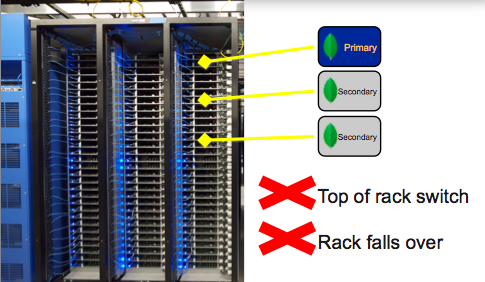

Backup, Restore and Disaster Recovery
@asya999Available Live
asya999.github.com/seattle2012backup
Agenda
Backup
Recover
Disaster Recovery
Know your options and stay on top of it
Backups
What's the most important thing about making backups?
this is not a rhetorical question
Restoring them
If you don't ensure that your backups can be restored, there's not much point to doing backups
Backup Options
mongodump
copy files
snapshot disk
Mongodump

Mongodump
Dumps collections to *.bson files
Mirrors your structure
Can be run in live or offline mode
--dbpath for direct file access
--oplog to dump oplog last PIT
--query/filter selective dump
Mongodump
$ mongodump --help
Export MongoDB data to BSON files.
options:
--help produce help message
-v [ --verbose ] be more verbose (include multiple times
for more verbosity e.g. -vvvvv)
--version print the program's version and exit
-h [ --host ] arg mongo host to connect to ( /s1,s2 for
--port arg server port. Can also use --host hostnam
-u [ --username ] arg username
-p [ --password ] arg password
--dbpath arg directly access mongod database files in
path, instead of connecting to a mongod
needs to lock the data directory, so can
if a mongod is currently accessing the s
-d [ --db ] arg database to use
-c [ --collection ] arg collection to use (some commands)
-o [ --out ] arg (=dump)output directory or "-" for stdout
-q [ --query ] arg json query
--oplog Use oplog for point-in-time snapshotting
Mongorestore
mongorestore
--oplogReplay replay oplog last PIT
File System
Must use journaling
File system snapshot
Copy /data/db files
Seriously, always use journaling
File System
fsyncLock flush and stop accepting writes
Don't forget to fsyncUnlock
File System
Entire database
Backup files will be large
Fastest way to create a backup
Fastest way to restore a backup
Restore Options
Entire database
Replay Oplog
Selected dbs, collections
Disaster Recovery
Replica sets!!!
Disaster Avoidance
Disaster Recovery
> rs.conf() {
"_id" : "replSetName",
"version" : 3,
"members" : [
{
"_id" : 0,
"host" : "myhost1.dnsname.com:27017"
},
{
"_id" : 1,
"host" : "myhost2.dnsname.com:27017"
},
{
"_id" : 2,
"host" : "myhost3.dnsname.com:27017"
}
] } Disaster Recovery
Avoid Single Point of Failure
Disaster Recovery
Avoid Single Point of Failure in Replica sets
Disaster Recovery
Avoid Single Point of Failure in Replica sets

Disaster Recovery
Redundancy
- Multiple Datacenters
- Multiple Regions
Disaster Recovery
Recovery (restore) time
Replacement
- machine
- component (disk, memory, etc)
- cluster
Configuration (reconfiguration)
Backup Example: Sharded Cluster
Stop Balancer (and wait)
or no balancing window
Stop one config server (data R/O)
Backup Data (shards, config)
Restart config server
Resume Balancer
Restore Example: Sharded Cluster
Dissimilar #shards to restore to
Different shard keys?
Selective restores
Consolidate shards
Changing addresses of config/shards
Tips
- mongodump/mongoresore
- --oplog[Replay]
- --objcheck/--repair
- --dbpath
- --query/--filter
- bsondump
- - inspect data at console
- lvm snapshot time/space trade-off
- - Multi ESB backup
- - clean up snapshots